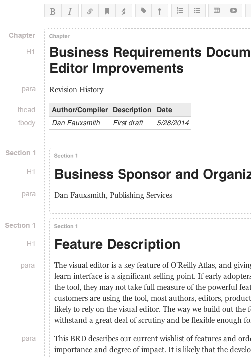

Feature Description
The visual editor is a key feature of O'Reilly Atlas, and giving users an intuitive, easy-to-learn interface is a significant selling point. If early adopters have difficulty exploring the tool, they may not take full measure of the powerful features under the hood. Once customers are using the tool, most authors, editors, production staff, and vendors are likely to rely on the visual editor. The tool has to withstand a great deal of scrutiny and be flexible enough for varied workflows.
This BRD describes our current wishlist of features and orders them in terms of importance and degree of impact. It is likely that the development work on these features will extend across multiple sprints.
Better Block Handling in Visual Editor
There's a lot in this first item, so it may end up being a sprint of its own.
- Add the ability to promote/demote heading levels in visual editor w/o introducing errors in the document structure. It will be a relatively common occurrence for authors, editors, copyeditors, and others to make such changes.
- At present, a user can select heading text and see the options "heading" and "subhead" in the drop-down "insert" menu. But selecting these styles can introduce errors to the document structure. Users must have a way to increase or decrease the heading level in such a way that content under that heading is handled properly, which may impact other subheadings in that section. We should also question the usefulness of the "subhead" and "heading" style options in comparison to likelihood of introducing structure problems that could impact a build.
- If a user is in a level 2 section that includes a level 3 subsection, she should be able to promote the level 2 section heading to a level 1 heading and the result should be that the level 3 subsection becomes a level 2 subsection. Similarly, she should be able to demote the level 2 section to a level 3, and the level 3 subsection should become a level 4 (assuming level 4s are allowed). She should NOT be allowed to change a level 2 section to a level 4 section, as doing so would break the document structure.
- It should be easy to move around block elements in general without jumping into the code editor. Users will want to move paragraphs, tables, figures, and sections. The editor should support these changes and help avoid breaking document structure.
- user should be able to "grab" a figure, table, list, or admonition and easily drag it to a new location (or copy/paste). Atlas should make this easy by intelligently grouping figure/caption, table/caption, items in a list, etc., so that they can be moved as a unit.
- how can we support moving entire sections and paragraphs? I'm leaving this a bit open-ended, as I think we should talk through these things.
- Currently, sections of content are delimited using lightly colored dashed lines. After just a couple levels of content, this becomes difficult to interpret and the usefulness of the approach quickly diminishes. It would be helpful to have a clearer view of the content in specific, active sections ("active" could mean the section in which the cursor is placed). Consider a view in which the outline around an active content block is highlighted in a more obvious way (perhaps a more obvious highlight color when active?) when the cursor in that section. This could help clarify the structure by showing which content falls within the bounds of a specific section. For example, as I write this text, I'm in a Section 1, and the bounding box of this section could be highlight to help distinguish it and show me where I'm at in the document.
- It should be easier to identify the style applied to a block of content. This could help production staff by giving them a quick way of looking at document structure. MS Word includes this feature (I believe it's called "Draft" view). You might consider combining a Draft view feature with a handle to help "grab" and manipulate sections.
- In this current document, you might imagine each block style definition (paragraph, bullet list item, code block, heading1, chapter title, figure, figure-caption, etc.) appearing in a row to the left of the content. (I would recommend doing this in an unobtrusive way, to make it less distracting...or even give users the ability to hide this information). It would give the ability to quickly scan the column of information to check the structure. It would be idea to be able to click on such a term and be able to change it, in just the same way you could if you were to instead highlight the content itself.
- Further, imagine another column that gives information just on section level. Again, it would be a great feature to be able to manipulate section hierarchy by clicking on and changing these.
- You might see something like this for example:
- 
- In the example image above, you might be able to click on the first "Section 1" tag and see that all of the tags for the elements under this section become highlighted. Or you might be able to "grab" the "Section 1" tag and move the whole section, or promote/demote, copy, or delete it. Or imagine clicking on "para" to the left of the line "Dan Fauxsmith, Publishing Services," and then clicking on "B" to make the whole thing bold, or on the bulleted list icon to change the line to a bullet item.
- Cursor-after-element Problems: It is sometimes difficult to place the cursor beneath inserted elements to continue editing/writing. The section handling should take this into account. I think this is an important fix to make because it will have a big impact on those users that aren't able to use the code view to get around the problem. It's easy to imagine their frustration at not being able to continue writing because of this problem.
- Better Way to View/Add attributes in Visual Editor: Ability to add attributes in the visual editor, most notably to add "class" attributes when needed for styling.
- Redesign Editor Toolbars: Right now we have a big dropdown with all the HTMLBook elements. We should redesign the toolbar so it's built for HTMLBook, not with HTMLBook as an afterthought.
- Better Table Manager: When inserting a table from the visual interface, you initially see a screen of options. There is no way to get back to these options in the UI (have to go to code view). Also add the ability to insert/delete new rows on a table. Referenced in #742.
- Add Basic Format CSS + Buttons: We need an easy way to add a class to something to make it underlined, strikethrough, superscript, subscript, etc. This would probably be a basic stylesheet that we always include in the builds, and buttons to insert the classes in the editor.
- Show Image File Names in Visual Editor: Right now it's not possible to see the file name of an image in the visual editor. Add some kind of hover/toggle to show/hide image file names. Referenced in #952.
- Image Button: Add ability to insert images through more traditional "select file to upload" approach; supported through an easy to find button in UI toolbar. It should also give users the ability to add ALT text. Referenced in #876.
- Allow customization of styling toolbar: Let users add/remove toolbar buttons in the Visual Editor, so they can remove buttons that are not applicable to them. For example, get rid of the "pre" button for fiction publishers
-